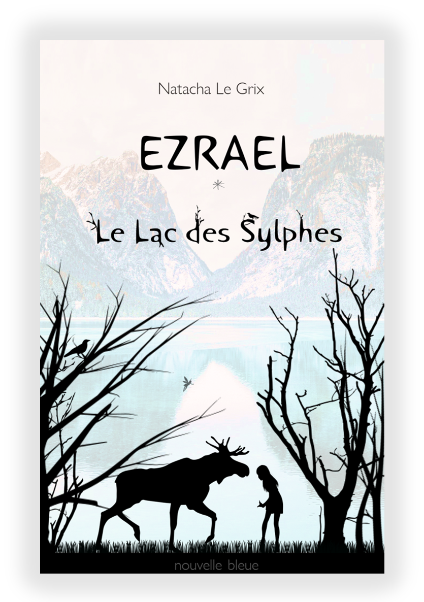

© All rights reserved.
L'histoire
Imaginez notre monde balayé par la colère des hommes. Depuis, la vie reprend son souffle… Mais elle est métamorphosée. La nature se tient prête à prendre sa revanche.
Seul un noyau d’humanité subsiste alors retranché sous Terre. Il y reste tapi de longues années à Istan Gard, la cité enfouie.
Or vient enfin le jour où des curieux s’aventurent au dehors. Ces explorateurs découvrent un monde hostile et peuplé de créatures aussi belles qu’effrayantes.
A leur rencontre, certains sombrent dans la folie, la peur et même l’amour. Une enfant serait née de l’union d’une humaine et d’un sylphe.
Seize ans plus tard, elle ne sait pourtant rien de ce peuple du Nouveau Monde, à l’histoire brouillée de légendes. Ezra quitte donc la cité, en quête de son passé. Malgré les mises en gardes, elle s’élance sur les traces de ses parents disparus sur les rives d’un lac – le Lac des Sylphes.
Son chemin croisera la route de monstres et de petits chevaliers, d’enfants sauvages et de grands cervidés qui la mèneront par-delà la forêt de Pan, à la découverte d'une nature sauvage et de sa vraie nature.
"Le Lac des Sylphes déploie un riche univers.
Par le prisme de ce ‘fantastique légendaire’ perce une ode à la nature et à la vie, comme un panthéisme teinté d’humanisme.
Ce à l’appui d’une écriture personnelle, à la fois lyrique et évocatrice.
Le tout offre de belles séquences, des scènes piquées, dans une atmosphère dense." ~ Gallimard Jeunesse